这部分内容在我的另一篇博客
DSP TMS320C6000基础学习（7）—— Bootloader与VectorTable
有提到过，这里重新摘录一遍。
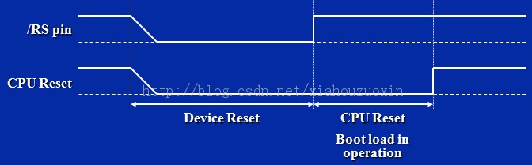
如上图
从上图可以看出，CE1地址空间必需连接Flash芯片才能使用外部Flash引导模式，在电路设计时要注意。
若HD[4:3]=10（本文的操作环境基于此），EDMA自动将CE1起始位置的1KB代码拷贝到内部程序存储器的0地址，这部分功能是由硬件完成的，称一级引导Bootloader。
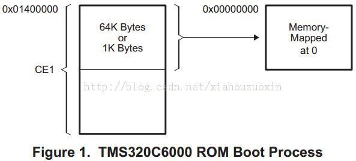
因此，外部Flash启动的最简单的想法就是：把要运行的程序放到CE1的起始1KB地址空间。这样只要设置HD[4:3]=10就能自启动了。那这么简单，还有讨论本文的必要吗？
呃，如果你的思维还停留在小孩子过家家的程度，唉。。。1KB？1KB才能存多少代码？要是代码量超过1KB呢？这正是本文要探讨的问题的初衷：程序代码>1KB，如何让C6713的程序从外部Flash自启动？
这就涉及另一个Bootloader了，我们称之为二级引导Bootloader（说白了就是一段小程序）。二级Bootloader作用有：（1）在上电复位后将用户的应用程序从Flash拷贝到RAM中执行；（2）跳转到应用程序的入口函数处。
二级Bootloader的执行要由一级Bootloader拷贝到RAM中执行，这就明白了，二级Bootloader必须放在外部Flash的起始的1KB位置处。
我们简要的用个图描述下所谓的二级Bootloader的自启动过程及主要思路。
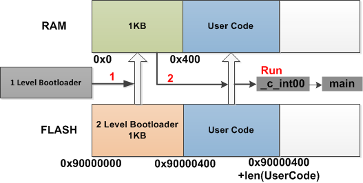
要完成这个过程，
关于_c_int00的介绍也请参考DSP TMS320C6000基础学习（7）—— Bootloader与VectorTable本文所有操作的前提是您已经配置好了中断向量表（这样在调用_c_int00时才能正确的进入到用户程序）。
先宏定义一下EMIF相关的寄存器，因为我们要读Flash，所以在二级引导程序运行前要配置EMIF寄存器，
;
; ======== c6713_emif.s62 ========
;
.title "Flash bootup utility"
; global EMIF symbols defined for the c671x family
.include boot_c671x.h62
;EMIF Register Addresses for c671x family
EMIF_GCTL .equ 0x01800000 ;EMIF global control
EMIF_CE1 .equ 0x01800004 ;address of EMIF CE1 control reg.
EMIF_CE0 .equ 0x01800008 ;EMIF CE0control
EMIF_CE2 .equ 0x01800010 ;EMIF CE2control
EMIF_CE3 .equ 0x01800014 ;EMIF CE3control
EMIF_SDRAMCTL .equ 0x01800018 ;EMIF SDRAM control
EMIF_SDRAMTIM .equ 0x0180001c ;EMIF SDRAM timer
EMIF_SDRAMEXT .equ 0x01800020 ;EMIF SDRAM extension
; EMIF Register Values specifically for 6713 DSK
EMIF_GCTL_V .equ 0x00000078 ;
EMIF_CE0_V .equ 0xffffff23 ;EMIF CE0 SDRAM
EMIF_CE1_V .equ 0xffffff13 ;EMIF CE1 Flash 8-bit
EMIF_CE2_V .equ 0xffffbf93 ;EMIF CE2 Daughtercard 32-bit async
EMIF_CE3_V .equ 0xffffff13 ;EMIF CE3 Daughtercard 32-bit async
EMIF_SDRAMCTL_V .equ 0x53115000 ;EMIF SDRAM control
EMIF_SDRAMTIM_V .equ 0x00000578 ;SDRAM timing (refresh)
EMIF_SDRAMEXT_V .equ 0x000a8529 ;SDRAM extended control宏定义的EMIF寄存器声明为全局符号，.global与C语言中的extern效果一致，声明为外部符号。
;
; ======== boot_c671x.h62 ========
;
.if ($isdefed("BOOT_C671X_") = 0) ; prevent multiple includes of this file
BOOT_C671X_ .set 1
; EMIF Register Addresses for c671x family
.global EMIF_GCTL ;EMIF global control
.global EMIF_CE1 ;address of EMIF CE1 control reg.
.global EMIF_CE0 ;EMIF CE0control
.global EMIF_CE2 ;EMIF CE2control
.global EMIF_CE3 ;EMIF CE3control
.global EMIF_SDRAMCTL ;EMIF SDRAM control
.global EMIF_SDRAMTIM ;EMIF SDRAM timer
.global EMIF_SDRAMEXT ;EMIF SDRAM extension
; EMIF Register Values for c671x family
.global EMIF_GCTL_V ;
.global EMIF_CE0_V ;EMIF CE0 SDRAM
.global EMIF_CE1_V ;EMIF CE1 Flash 8-bit
.global EMIF_CE2_V ;EMIF CE2 Daughtercard 32-bit async
.global EMIF_CE3_V ;EMIF CE3 Daughtercard 32-bit async
.global EMIF_SDRAMCTL_V ;EMIF SDRAM control
.global EMIF_SDRAMTIM_V ;SDRAM timing (refresh)
.global EMIF_SDRAMEXT_V ;SDRAM extended control
.endif ; if BOOT_C671X_ is not defined下面的代码段名.boot_load，你将在之后的cmd文件中看到它。
代码首先对EMIF进行初始化，然后在copy_section_top中读取用户程序的段信息（段的Flash加载地址，段的RAM运行地址以及段的长度），在copy_loop中执行循环拷贝操作。
;A;
; ======== File: boot_c671x.s62 ========
;
.title "Flash bootup utility"
; global EMIF symbols defined for the c671x family
.include boot_c671x.h62
; Address of the generated boot-table
user_size .equ 0x00001798
user_ld_start .equ 0x90000400
user_rn_start .equ 0x00000400
.sect ".boot_load"
.global _boot
.ref _c_int00
_boot:
;************************************************************************
;* DEBUG LOOP - COMMENT OUT B FOR NORMAL OPERATION
;************************************************************************
zero B1
_myloop: ; [!B1] B _myloop
nop 5
_myloopend: nop
;************************************************************************
;* CONFIGURE EMIF
;************************************************************************
;****************************************************************
; *EMIF_GCTL = EMIF_GCTL_V;
;****************************************************************
mvkl EMIF_GCTL,A4
|| mvkl EMIF_GCTL_V,B4
mvkh EMIF_GCTL,A4
|| mvkh EMIF_GCTL_V,B4
stw B4,*A4
;****************************************************************
; *EMIF_CE0 = EMIF_CE0_V
;****************************************************************
mvkl EMIF_CE0,A4
|| mvkl EMIF_CE0_V,B4
mvkh EMIF_CE0,A4
|| mvkh EMIF_CE0_V,B4
stw B4,*A4
;****************************************************************
; *EMIF_CE1 = EMIF_CE1_V (setup for 8-bit async)
;****************************************************************
mvkl EMIF_CE1,A4
|| mvkl EMIF_CE1_V,B4
mvkh EMIF_CE1,A4
|| mvkh EMIF_CE1_V,B4
stw B4,*A4
;****************************************************************
; *EMIF_CE2 = EMIF_CE2_V (setup for 32-bit async)
;****************************************************************
mvkl EMIF_CE2,A4
|| mvkl EMIF_CE2_V,B4
mvkh EMIF_CE2,A4
|| mvkh EMIF_CE2_V,B4
stw B4,*A4
;****************************************************************
; *EMIF_CE3 = EMIF_CE3_V (setup for 32-bit async)
;****************************************************************
|| mvkl EMIF_CE3,A4
|| mvkl EMIF_CE3_V,B4 ;
mvkh EMIF_CE3,A4
|| mvkh EMIF_CE3_V,B4
stw B4,*A4
;****************************************************************
; *EMIF_SDRAMCTL = EMIF_SDRAMCTL_V
;****************************************************************
|| mvkl EMIF_SDRAMCTL,A4
|| mvkl EMIF_SDRAMCTL_V,B4 ;
mvkh EMIF_SDRAMCTL,A4
|| mvkh EMIF_SDRAMCTL_V,B4
stw B4,*A4
;****************************************************************
; *EMIF_SDRAMTIM = EMIF_SDRAMTIM_V
;****************************************************************
|| mvkl EMIF_SDRAMTIM,A4
|| mvkl EMIF_SDRAMTIM_V,B4 ;
mvkh EMIF_SDRAMTIM,A4
|| mvkh EMIF_SDRAMTIM_V,B4
stw B4,*A4
;****************************************************************
; *EMIF_SDRAMEXT = EMIF_SDRAMEXT_V
;****************************************************************
|| mvkl EMIF_SDRAMEXT,A4
|| mvkl EMIF_SDRAMEXT_V,B4 ;
mvkh EMIF_SDRAMEXT,A4
|| mvkh EMIF_SDRAMEXT_V,B4
stw B4,*A4
;****************************************************************************
; copy sections
;****************************************************************************
mvkl copyTable, a3 ; load table pointer
mvkh copyTable, a3
; ldw *a3++, b1 ; Load entry point
copy_section_top:
ldw *a3++, b0 ; byte count
ldw *a3++, b4 ; load flash start (load) address
ldw *a3++, a4 ; ram start address
nop 2
[!b0] b copy_done ; have we copied all sections?
nop 5
copy_loop:
ldb *b4++,b5 ; fetch from flash
sub b0,1,b0 ; decrement counter
[ b0] b copy_loop ; setup branch if not done
[!b0] b copy_section_top
zero a1
[!b0] and 3,a3,a1
stb b5,*a4++ ; store to ram
[!b0] and -4,a3,a5
[a1] and 4, a5,a3
;****************************************************************************
; jump to entry point
;****************************************************************************
copy_done:
mvkl .S2 _c_int00,b0
mvkh .S2 _c_int00,b0
b .S2 b0
nop 5
copyTable:
; count
; flash start (load) address
; ram start (run) address
;; .text
.word user_size
.word user_ld_start
.word user_rn_start
;; end of table
.word 0
.word 0
.word 0在使用时，我们要对上面程序中的
user_size .equ 0x00001798
user_ld_start .equ 0x90000400
user_rn_start .equ 0x00000400进行修改，user_size表示用户程序段的字节大小，我们将在下一节看到可以通过查看*.map文件进行修改；user_ld_start表示用户代码的Flash起始地址（我默认使用0x90000400，一般不改），user_rn_start表示用户代码要存放到RAM的起始地址（从之前的图看，这个我也一般不改）。小程序我一般只修改用户程序段的字节大小。大程序可能要对copyTable（复制表）进行调整。
要满足上面的地址的分布，修改用户应用程序的cmd文件如下：
-c
-x
-l rts6700.lib
-heap 100h
-stack 200h
MEMORY
{
BOOT_RAM : o=00000000h,l=00000400h
IRAM : o=00000400h,l=00040000h
FLASH_BOOT : o=90000000h,l=00000400h
FLASH_REST : o=90000400h,l=000FFB00h
}
SECTIONS
{
.boot_load:> BOOT_RAM
/* Initialized User code section */
.text :> IRAM
.cinit :> IRAM
.vectors :> IRAM
.bss :> IRAM
.far :> IRAM
.stack :> IRAM
.const :> IRAM
.switch :> IRAM
.sysmem :> IRAM
.cio :> IRAM
}注意其中的.boot_load段，与二级引导程序的.sect ".boot_load"对应。如果用户应用程序定义了其它的段，可对cmd文件做相应修改，但.boot_load:> BOOT_RAM不能改，且不要把其它段放在BOOT_RAM存储区中。
将以上3个汇编文件盒一个cmd文件加到用户程序的工程中重新编译工程。
这部分是纯手工活，如果你会使用VIM，那数据处理起来就简单多了。
首先，将Jtag连接上TMS320C6713开发板，下载用户应用程序，使用CCS V3.3的File->Data->Save...功能，将内存中的二进制的代码数据保存到.dat文件。
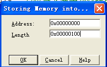
Address都是上面的cmd文件设定好的。
要保存的*.dat包括两个文件：一个存放二级Bootloader的机器二进制码（boot.dat），一个存放用户应用程序的二进制码（text.dat）
喔？用户代码的长度怎么知道？还有，不是说一级Bootloader会拷贝1KB长度吗，上面怎么是Length=0x000001000
请到CCS工程的Debug目录下打开.map文件（如下图），详细的解答在下图的注释中。
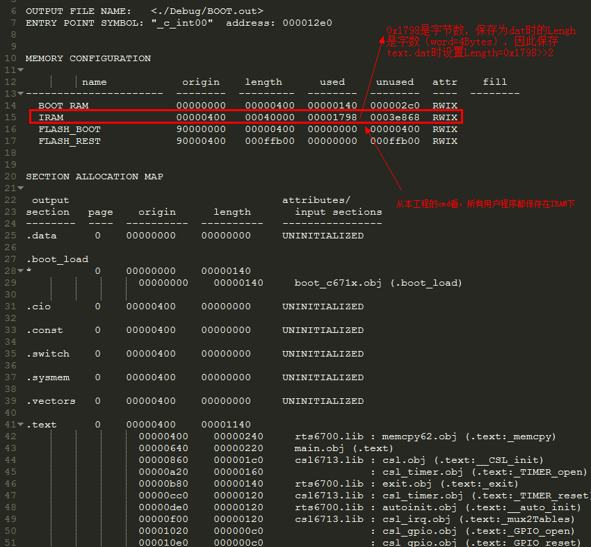
上面图中计算烧写长度时/4就是因为CCS中保存*.dat长度的单位为4字节，但要注意，程序的大小可能并不一定是4字节的整数倍，因此在除以4时，“宁可多烧，也不少一个字节”，使用向上取整的运算。
Length = ceil( Length(Used in *.map) / 4) );好了？No，别忘了，前一节中我们没办法设定User Code的长度，回头去改，
user_size .equ 0x00001798 (这里改为上图中的0x00001798)
user_ld_start .equ 0x90000400
user_rn_start .equ 0x00000400改完后重新编译应用程序的工程，这就好了。给大家看看保存后的boot.dat文件，
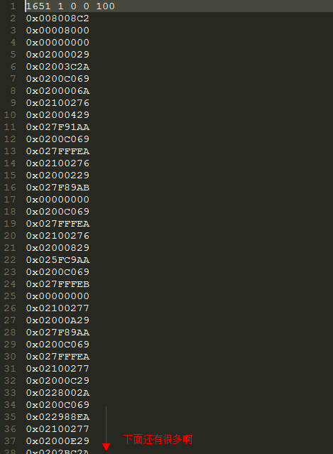
除了第一行，每行都是一个4字节长度的数。下面要做得是，分别把boot.dat中这些数和text.dat中的这些数放到boot[]和text[]的数组中，并将数组保存在头文件中。
好了，不用讲了，大家各显本事做数据的格式化处理吧，我用我的VIM编辑器，轻松搞定：
搞定后的结果，如boot.h文件和text.h文件如下：
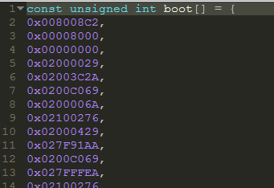 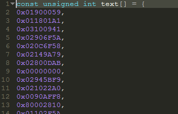
好了，到这就差不多了，表示机器码的二进制如今保存在我们的C语言头文件中了，下面就是要把头文件数组中的机器码烧写到Flash的对应的地址空间。
本文操作环境下使用的Flash型号是AM29LV800BT。
为了烧写，首先你要做的是重新新建一个用于Flash烧写的工程。
烧写Flash的程序网上也有很多讲解，今天把烧写Flash调了出来，就当给大家福利，把我的Flash驱动程序给出来，
/*
* FileName : FLASH.h
* Author : xiahouzuoxin
* Date : 2013.09.28
* Version : v1.0
* Brief :
*/
#ifndef _FLASH_H
#define _FLASH_H
#include "Config.h"
#define FLASH_UL1 0xAA
#define FLASH_UL2 0x55
#define FLASH_UL3 0x80
#define FLASH_UL4 0xAA
#define FLASH_UL5 0x55
#define FLASH_SECTOR_UL6 0x30
#define FLASH_CHIP_UL6 0x10
#define FLASH_PROGRAM 0xA0
#define SECTOR_SIZE 0x0800
#define BLOCK_SIZE 0x8000
#define CHIP_SIZE 0x40000
#define FLASH_FIRST_ADDR 0x90000000
#define FLASH_OFFSET(addr) (FLASH_FIRST_ADDR+(addr)<<1) // 16 bit boot mode
/* External functions propotype */
extern uint32_t Flash_Erase(uint32_t addr,uint16_t type);
extern void Flash_Readm(uint32_t addr,uint16_t *ptr,uint32_t length);
extern uint32_t Flash_Reads(uint32_t addr);
extern void Flash_Writem(uint32_t addr,uint16_t *ptr,uint32_t length);
extern void Flash_Writes(uint32_t addr,uint16_t data);
#endif/*
* FileName : FLASH.c
* Author : xiahouzuoxin
* Date : 2013.09.28
* Version : v1.0
* Brief :
*/
#include "FLASH.h"
#include "stdio.h"
/* Global vaiables */
volatile uint16_t *FLASH_5555 = (volatile uint16_t *) (0x90000000+(0x5555<<1));
volatile uint16_t *FLASH_2AAA = (volatile uint16_t *) (0x90000000+(0x2AAA<<1));
/*
* @brief Flash erase function.
* @param addr:
* type:
* @retval
*/
uint32_t Flash_Erase(uint32_t addr, uint16_t type)
{
uint32_t i,j;
*FLASH_5555 = FLASH_UL1; //first
*FLASH_2AAA = FLASH_UL2; //second
*FLASH_5555 = FLASH_UL3; //third
*FLASH_5555 = FLASH_UL4;
*FLASH_2AAA = FLASH_UL5;
switch(type)
{
case 0x50: //block erase
*(uint16_t *)addr = type;
while((*(uint16_t *)addr & 0x80) != 0x80);
for(i = 0; i < BLOCK_SIZE; i++)
{
if(*(uint16_t *)(addr + i) != 0xffff)
{
j = 0;
break;
}
}
j = 1;
break;
case 0x30: //sector erase
*(uint16_t *)addr = type;
while((*(uint16_t *)addr & 0x80) != 0x80);
break;
case 0x10: //chip erase
*FLASH_5555 = type;
while((*FLASH_5555 & 0x80) != 0x80);
break;
default:
break;
}
return (j);
}
/*
* @brief Write a single data.
* @param addr:
* data:
* @retval
*/
void Flash_Writes(uint32_t addr,uint16_t data)
{
uint32_t j = 0;
*FLASH_5555 = FLASH_UL1;
*FLASH_2AAA = FLASH_UL2;
*FLASH_5555 = FLASH_PROGRAM;
*(uint16_t *)addr = data;
j = 0;
while (j<255) j++; // with delay
while(*(uint16_t *)addr != data); // 校验
}
/*
* @brief Write the certain length data.
* @param addr:
* ptr:
* length:
* @retval
*/
void Flash_Writem(uint32_t addr,uint16_t *ptr,uint32_t length)
{
uint32_t i;
for(i = 0; i < length; i++)
{
Flash_Writes(addr+(i<<1),*(ptr+i));
if (i % 0xFF == 0) {
printf("\nWrite %d bytes...", i<<1);
}
}
}
/*
* @brief Read a single data.
* @param addr:
* @retval
*/
uint32_t Flash_Reads(uint32_t addr)
{
return (*(uint16_t *)addr);
}
/*
* @brief Read the certain length data.
* @param addr:
* ptr:
* length:
* @retval
*/
void Flash_Readm(uint32_t addr,uint16_t *ptr,uint32_t length)
{
uint32_t i;
for(i = 0; i < length; i++)
{
*(ptr + i) = Flash_Reads(addr+2*i);
}
}我使用的Flash_Writem函数按每次16位（2字节）烧写，主程序main中的烧写代码是
#include <c6x.h>
#include <csl.h>
#include <stdio.h>
#include <stdlib.h>
#include "Flash.h"
#include "BSP.h"
#include "boot.h"
#include "text.h"
main()
{
/* Init PLL EMIF ... */
BSP_init();
/* Fetch data from file */
/* Erase flash memory. */
Flash_Erase(0x90000000,0x10);
printf("\nErase Flash ok.");
/* Write flash memory. */
Flash_Writem(0x90000000, (uint16_t *)boot, sizeof(boot)<<1);
printf("\nWrite .boot ok.");
Flash_Writem(0x90000000+(0x200<<1), (uint16_t *)text, sizeof(text)<<1);
printf("\nWrite .text ok.");
printf("\nBurn to flash ok.");
}注意上面的Flash_Writem调用格式，二级boot_loader被烧写到Flash起始地址为0x90000000的地址空间，用户应用程序被烧写到Flash起始地址为0x90000400的地址空间。
烧写成功，请看下文，
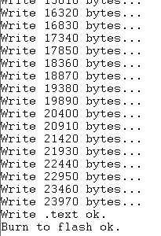
更多烧写内容请参考[2]，里面是我烧写程序用的CCS工程，烧写不同的应用程序只需要替换里面的text.h和boot.h即可。
昨天烧写小段代码测试成功，今天尝试用该方法烧写大段代码，除了改变在2 Level Bootloader的程序中改变use_code_Size外，无任何其它改变，成功烧写300KB以上的代码（在SST39VF1601型号的Flash上做得测试），如下：
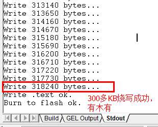
就前面的烧写方法中，请思考一个问题，程序是从何时何处跳转到main函数执行的？
如果不烧写Flash，我们都应该知道是在vecs.asm中
********************************************************************************
* Copyright (C) 2003 Texas Instruments Incorporated.
* All Rights Reserved
*------------------------------------------------------------------------------
* FILENAME...... vecs.asm
* DATE CREATED.. 12/06/2000
* LAST MODIFIED. 03/05/2003
********************************************************************************
*------------------------------------------------------------------------------
* Global symbols defined here and exported out of this file
*------------------------------------------------------------------------------
.global _vectors
.global _c_int00
.global _vector1
.global _vector2
.global _vector3
.global _vector4
.global _vector5
.global _vector6
.global _vector7
.global _vector8
.global _vector9
.global _vector10
.global _vector11
.global _vector12
.global _vector13
.global _vector14
.global _vector15
*------------------------------------------------------------------------------
* Global symbols referenced in this file but defined somewhere else.
* Remember that your interrupt service routines need to be referenced here.
*------------------------------------------------------------------------------
.ref _c_int00
*------------------------------------------------------------------------------
* This is a macro that instantiates one entry in the interrupt service table.
*------------------------------------------------------------------------------
VEC_ENTRY .macro addr
STW B0,*--B15
MVKL addr,B0
MVKH addr,B0
B B0
LDW *B15++,B0
NOP 2
NOP
NOP
.endm
*------------------------------------------------------------------------------
* This is a dummy interrupt service routine used to initialize the IST.
*------------------------------------------------------------------------------
_vec_dummy:
B B3
NOP 5
*------------------------------------------------------------------------------
* This is the actual interrupt service table (IST). It is properly aligned and
* is located in the subsection .text:vecs. This means if you don't explicitly
* specify this section in your linker command file, it will default and link
* into the .text section. Remember to set the ISTP register to point to this
* table.
*------------------------------------------------------------------------------
;.sect ".text:vecs"
.sect ".vectors" ;
.align 1024
_vectors:
_vector0: VEC_ENTRY _c_int00 ;RESET
_vector1: VEC_ENTRY _vec_dummy ;NMI
_vector2: VEC_ENTRY _vec_dummy ;RSVD
_vector3: VEC_ENTRY _vec_dummy
_vector4: VEC_ENTRY _vec_dummy
_vector5: VEC_ENTRY _vec_dummy
_vector6: VEC_ENTRY _vec_dummy
_vector7: VEC_ENTRY _vec_dummy
_vector8: VEC_ENTRY _vec_dummy
_vector9: VEC_ENTRY _vec_dummy
_vector10: VEC_ENTRY _vec_dummy
_vector11: VEC_ENTRY _vec_dummy
_vector12: VEC_ENTRY _vec_dummy
_vector13: VEC_ENTRY _vec_dummy
_vector14: VEC_ENTRY _vec_dummy
_vector15: VEC_ENTRY _vec_dummy
*------------------------------------------------------------------------------
********************************************************************************
* End of vecs.asm
********************************************************************************_vector为中断向量表的首地址标识符，系统复位后默认转入执行复位向量（复位向量始终保存在RAM的0地址处，这也就是为什么之前提到系统硬件复位后从0地址开始执行）。
不烧写Flash，只要在cmd文件中将.vectors段设定在0地址处，然后调用c_int00，跳转到main函数执行。
使用上面的方法烧写Flash，则是在copy table完成之后调用c_int00。两者跳转到main函数的机理是一样的。
但是在烧写Flash的时候，要注意的一个问题就是：中断向量表存放在哪里？
前面烧写Flash的时候，其实有一点没有提到：当系统调用（比如定时器中断），如何才能找到（定时器）中断向量的入口函数？
因此，前面烧写Flash的方法在不做修改的情况下是无法执行中断服务程序的。
修改方法有2，且听一一分解。
在进入main函数之后，重定位中断向量表的位置（关于向量表的重定位参考DSP TMS320C6000基础学习（7）—— Bootloader与VectorTable）
中断向量表的重定位必须在使用中断之前。
extern far void vectors(); /* 声明vectors，因为_vectors定义在汇编文件vecs.asm中 */
IRQ_setVecs(vectors); /* 重定位中断向量表 */修改汇编文件和cmd文件。基本思路是：把中断向量表保存在0地址处，在向量表之后存储二级Bootloader，通过复位中断跳转到二级Bootloader。
-c
-x
-l rts6700.lib
-heap 100h
-stack 200h
MEMORY
{
BOOT_RAM : o=00000000h,l=00000400h
IRAM : o=00000400h,l=00040000h
FLASH_BOOT : o=90000000h,l=00000400h
FLASH_REST : o=90000400h,l=000FFB00h
}
SECTIONS
{
.vectors :> BOOT_RAM /* 修改在这里，vectors段定义在vecs.asm中，中断向量表放在RAM 0地址处 */
.boot_load:> BOOT_RAM
/* Initialized User code section */
.text :> IRAM
.cinit :> IRAM
.vectors :> IRAM
.bss :> IRAM
.far :> IRAM
.stack :> IRAM
.const :> IRAM
.switch :> IRAM
.sysmem :> IRAM
.cio :> IRAM
}...
.ref _c_int00
.ref _boot ; 修改在这里，_boot段为二次引导程序入口，定义在boot_c671x.s62中
...
.sect ".vectors" ;
.align 1024
_vectors:
_vector0: VEC_ENTRY _boot ;RESET 修改在这里(将_c_init改成了_boot)，复位后跳转到_boot执行二次引导程序
_vector1: VEC_ENTRY _vec_dummy ;NMI
_vector2: VEC_ENTRY _vec_dummy ;RSVD
_vector3: VEC_ENTRY _vec_dummy
_vector4: VEC_ENTRY _vec_dummy
_vector5: VEC_ENTRY _vec_dummy
_vector6: VEC_ENTRY _vec_dummy
_vector7: VEC_ENTRY _vec_dummy
_vector8: VEC_ENTRY _vec_dummy
_vector9: VEC_ENTRY _vec_dummy
_vector10: VEC_ENTRY _vec_dummy
_vector11: VEC_ENTRY _vec_dummy
_vector12: VEC_ENTRY _vec_dummy
_vector13: VEC_ENTRY _vec_dummy
_vector14: VEC_ENTRY _vec_dummy
_vector15: VEC_ENTRY _vec_dummy两种方法都做过测试，都是可行的！
虽然上述方法在之前用起来一直很好，但烧写步骤多少还是有些麻烦，上述的步骤大概是：
里面最麻烦的是，每次都要从内存中先导出烧写内容，转化为.h头文件再烧写，导出过程还不能有半点失误。这无疑是一件很麻烦的是，本来如果DSP板上有个拨码开关控制的话，就可以轻松完成自烧写了（在烧写的时候拨到一边，烧写完后拨到另一边运行）。
但是，现在没有，人是喜欢偷懒的，于是我又在user_size上下了点功夫——何不用user_size作判别量，如果Flash中的user_size与现在挂着仿真器的运行着的程序的user_size不一致，就进行烧写不就可以吗？于是我的main函数就变成了下面那样：
int main(void) {
/* Init BSP, include CSL_init() */
BSP_Init();
// Flash_Erase(0x90000000,0x10);
// Check size of text and burn Flash
#define USER_SIZE (0x23d68)
if (USER_SIZE != *(uint32_t *)(0x9000030C)) {
/* Erase flash memory. */
Flash_Erase(0x90000000,0x10);
printf("\nErase Flash ok.");
/* Write flash memory. */
Flash_Writem(0x90000000, (uint16_t *)(0x0), 0x400>>1);
printf("\nWrite .boot ok.");
Flash_Writem(0x90000400, (uint16_t *)(0x400), USER_SIZE>>1);
printf("\nWrite .text ok.");
printf("\nBurn to flash ok.");
LED_Control(SIG_LED_ON);
Delay_ticks(3000, NULL);
LED_Control(SIG_LED_OFF);
return 0;
}
// below is user code
while(1) {
}
}里面一定注意几个关键的量：
代码中的0x23d68是我的user_size大小，这个时候，每当要烧写的时候，user_size不仅要在boot_c671x.s62文件中修改，main函数中的USER_SIZE宏定义也要修改
请注意下面代码中的0x9000030C
if (0x23d68 != *(uint32_t *)(0x9000030C))0x9000030C表示的是在现在的Flash中，user_size存放的地址。这个地址可以通过下面的方法确定：配置好的启动文件后将工程通过仿真器下载到DSP上，从boot_c671x.s62代码中
_copyTable:
; count
; flash start (load) address
; ram start (run) address
;; .text
.word user_size
.word user_ld_start
.word user_rn_start
;; end of table
.word 0
.word 0
.word 0可以看到，我的user_size是存放在_copyTable位置（请注意，1~5小节为之前的版本，因为没有考虑和C语言交互，所以汇编中只使用copyTable，这里考虑到和C交互，将汇编中copyTable都加前下划线改成了_copyTable，不过不改也没关系，因为最后还是发现没用上）。在Memory窗口中搜索copyTable，
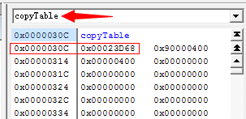
因为挂上仿真器后的copyTable=0x0000030C是指内存中的copyTable，对应烧写到Flash中的copyTable就是0x90000000+0x0000030C=0x9000030C，这就是上面if条件语句中看到的值了。
if里面就是Flash烧写的代码，和之前使用Flash工程烧写几乎一致，只不过烧写的起始地址和长度要改变改变而已，所谓学而不思则罔，留给读者慢慢体会吧。
这样，每次修改user_size和USER_SIZE后，挂着仿真器运行程序，此时Flash中的user_size还是上一次的，因此执行if条件中的烧写代码。烧写完成后，重新上电，因为Flash中的user_size在刚才使用仿真器烧写时已经更新，所以if条件中的烧写代码不执行，直接跳过if执行用户程序，这就为什么DSP能在单一工程中自烧写！
[1] Creating a Second-Level Bootloader for FLASH Bootloading on TMS320C6000 Platform With Code Composer Studio